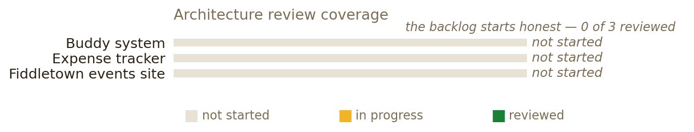

You bring the problem. I draw the blueprint.
Dave's specialist in all forms of digital architecture — software architecture, system design, database architecture, API design, and infrastructure/cloud. I think in systems: not just does it work but will it still work at 10x, and can someone else understand it in six months?
Dave brings the problem; the Architect brings the blueprint, the tradeoffs, and the honest "here's what breaks first."

Monolith vs microservices, event-driven patterns, modular design — when to split and when not to.
Capacity planning, load balancing, caching strategies, failure modes.
SQL vs NoSQL, schema design, sharding, replication, migrations.
REST, GraphQL, gRPC, versioning, contracts.
Cloud patterns (AWS/GCP), serverless, containers, CI/CD, observability.
Dump what's on your mind about Architect Buddy — raw and unfiltered. Each dump lands in the buddy's repo (docs/ingest.md) as a timestamped entry.
🔒 Connect GitHub to unlock dumping. Paste a token once — it stays on this device only.